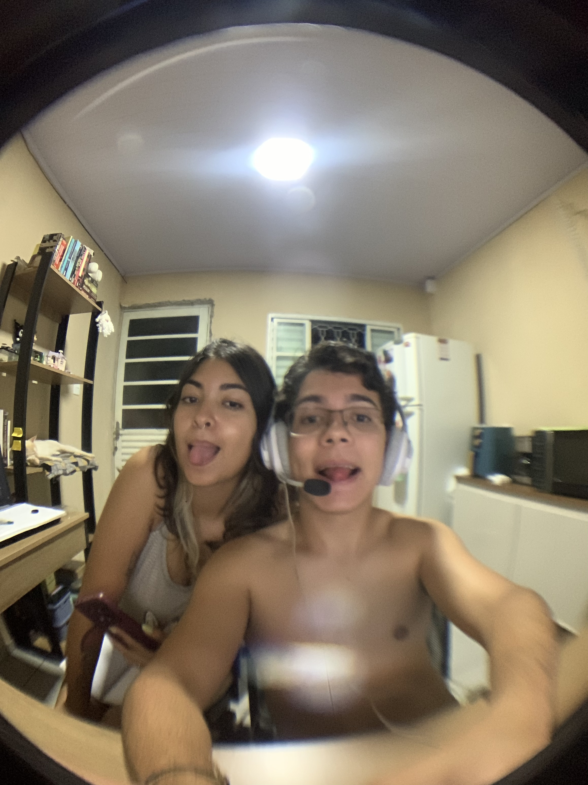

Nossa História
-
2020: O começo de tudo 💫
Tivemos nossa primeira interação pelo Discord, onde começamos a nos conhecer aos poucos. Mal podíamos imaginar o quanto isso mudaria nossas vidas. Eu era apenas um moleque bobinho, que não sabia interagir com você. Você também era tímida, mas conseguia me deixar encantado com o seu jeitinho, e isso não mudou até os dias de hoje. ❤️


-
2021: Nosso primeiro encontro 💕
Lembro de cada detalhe daquele dia, você vindo até mim na rodoviária, nossa primeira troca de olhares, nosso primeiro abraço e depois tomando Starbucks no shopping. A gente era tão bobo que nosso primeiro beijo só aconteceu quando chegamos na casa da minha mãe kkkk. Eu era bem lerdo e te deixava bem brava com algumas coisas, mas não mudaria nada. Amo ter tido minhas primeiras experiências com você, sinto que isso deixou nossos laços ainda mais fortes.
-
2022: Algumas Primeiras Vezes Inesquecíveis 🥰
Foi o ano em que vivemos pela primeira vez momentos especiais, como a nossa primeira ida juntos a um festival. Também foi a nossa primeira virada de ano juntinhos. Amo lembrar desses momentos, e isso só me faz querer criar mais memórias e momentos assim com você. ❤️


-
2023: Nossa Primeira Viagem Para a Praia ⛱️
Em 2023, tivemos a oportunidade de viver um momento incrível juntos na praia. Nossa primeira ida à praia juntinhos, eu descobrindo a gostosura que é você de biquíni e como é bom ficar agarradinho na água salgada (momento tarado).


-
2024: Nossa Segunda Viagem e Morando Juntos 🏡
Um ano mais que especial para nós. Viajamos pela primeira vez juntos de avião para um lugar incrível, vários dias bebendo muitos drinkzinhos, agarradinhos na água e comendo muito pão com ovo e cebola (momento em que a momo descobriu como é bom pão com ovo).
Nesse mesmo ano, fomos a outro festival que foi perfeito, mesmo com alguns imprevistos no final. Eu amo te ver pulando e cantando engual uma biruta, sentir meu pé sendo esmagado com a momo pulando nele kkkkk e descobrir a paixão da momo por Bring Me The Horizon.
E, por fim, no mesmo ano, decidimos finalmente morar juntinhos. Tenho toda a certeza do mundo de que essa foi a decisão mais certeira que tomei na vida. Estar ao seu lado deixa a vida mais leve. ❤️


-
2025: Nosso Primeiro Ano Morando Juntos 🏠
E finalmente chegamos aqui, vivendo juntinhos, construindo nosso lar e criando memórias que durarão para sempre. Tem sido incrível viver essa experiência ao seu lado.
Confesso que já senti e ainda sinto medo em muitos momentos, mas é o medo de não conseguir alcançar algum objetivo ou, em algum instante, não conseguir conquistar o seu sorrisinho. Mesmo assim, em todos esses momentos em que me senti fragilizado, eu tinha você ao meu lado. Ver você sorrindo, dormindo, tomando banho, respirando ou apenas estando perto de mim me deixa extremamente feliz e realizado.
Durante todos esses anos, sempre sonhei com esse momento. Estar conquistando nossas coisinhas, mesmo que aos poucos, me enche de alegria. Sei que ainda vamos conquistar muitas coisas boas, é só questão de tempo.
Peço perdão se em algum momento deixei faltar algo, mas prometo que sempre vou me esforçar para te dar conforto e paz. ❤️
